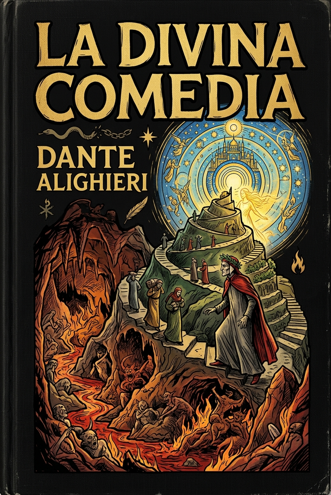

La divina comedia
Dante Alighieri
Dante emprende un viaje alegórico por el Infierno y el Purgatorio, guiado por Virgilio, hasta alcanzar el Paraíso junto a Beatriz. El poema recorre la justicia, la fe y la búsqueda de la salvación en una visión monumental del más allá.